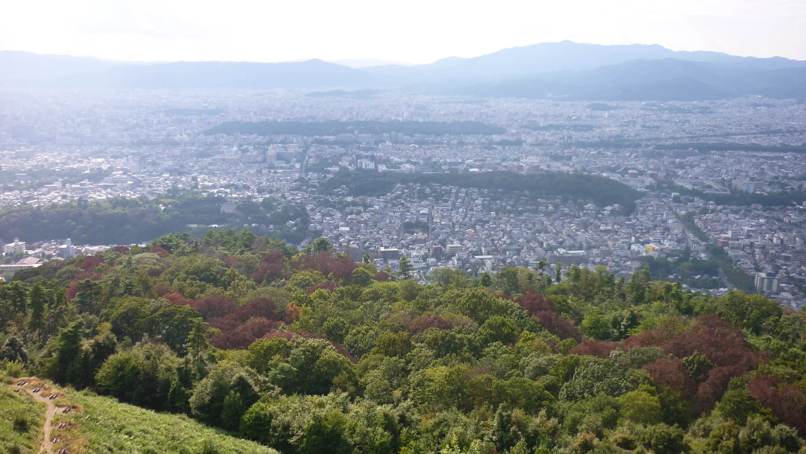
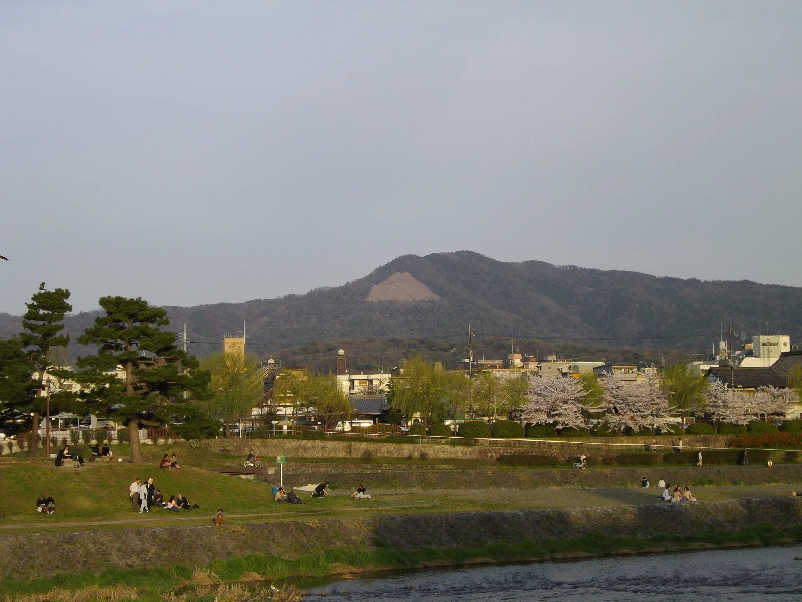
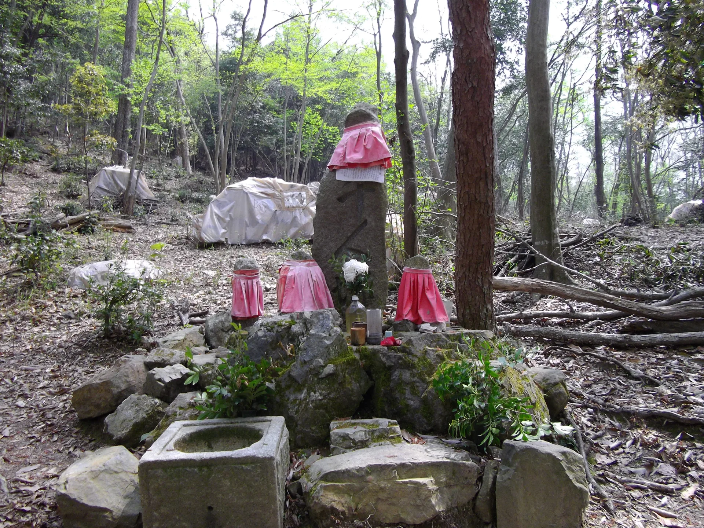

An easy escape into the mountains, just behind Ginkaku-ji.

From Taka’s Notebook
Kyoto is a city of temples, old streets, and neighbourhoods that are
rewarding to explore on foot. But the mountains are always close.
If you enjoy walking, I think it is worth stepping away from the
streets for a little while and seeing the city from above.
As someone who enjoys hiking and spending time outdoors, I especially
like recommending Mt. Daimonji to guests who want to see a different
side of Kyoto.

Mt. Daimonji seen beyond the city.
Behind Ginkaku-ji, a trail climbs to the fire beds on Mount
Daimonji. It is not a full day in the mountains. From the
Ginkaku-ji side, the climb takes about 30 minutes, and it fits
naturally into a day in eastern Kyoto.
This is the kind of walk I like to suggest to guests who want a
little nature between the temples and streets. You do not need to
reach the summit. For most visitors, the fire beds are the best
destination.
What Is Mt. Daimonji?
Mt. Daimonji is one of the mountains in Kyoto’s eastern Higashiyama
area. From the city, you may notice the giant Japanese character
dai (大) on its slope. The shape is formed by a series of fire
beds, which are lit every August 16 for Kyoto’s Gozan Okuribi.
What I find interesting is that the “dai” is not only something to
look at from the city. On ordinary days, you can walk up from the
Ginkaku-ji side to the fire beds themselves, then turn around and
look across Kyoto from the mountainside.
The trail continues toward the mountain summit, but this guide uses
the fire beds as the main destination. For most travelers, they give
you both the story of the mountain and the view you came to see.
The path soon enters the trees. The climb is short, but it includes
uneven ground and steps, so take your time. As you gain height, the
sounds of the sightseeing area begin to fall away.

Senninzuka is a quiet landmark along the trail.
The Fire Beds Are the Destination
At the Daimonji fire beds, the view suddenly opens across the Kyoto
basin. The city spreads out below, framed by the mountains around
it. After walking at street level among houses, shops, and temples,
seeing the shape of Kyoto from here gives the day a different
perspective.
You can continue to the summit if you enjoy hiking and have enough
time and energy. But you do not need to. The fire beds already give
you the wide view that makes this small hike worthwhile.
Taka’s Tip
You don’t need to reach the summit. For most visitors, I recommend
stopping at the fire beds, taking your time, and enjoying the view
over Kyoto.
Getting There from The Showa House
From Kuzuha Station, take the Keihan Railway toward Demachiyanagi,
then continue to the Ginkaku-ji area. It is an easy hike to combine
with a day in eastern Kyoto without turning it into a separate
mountain trip.
The Route from Ginkaku-ji Temple to the Fire Beds on Mt. Daimonji
Another Option: Sunset and the Kyoto Night View
The daytime view is the easiest option and the one I would suggest
first. If you are comfortable on mountain paths, another way to
enjoy the fire beds is to arrive before sunset and watch the lights
appear across Kyoto.
For something a little more special, I also recommend climbing while
it is still light and waiting at the fire beds for sunset.
Reach the fire beds before sunset, enjoy the evening view, and then
return along the same path with a headlamp. I do not recommend
beginning the climb after dark. The trail is unlit, and a phone
light is not a substitute for proper lighting.
Guests staying at The Showa House can borrow a headlamp from us.
A Half Day with Both Kyoto and Nature
A simple route is to visit Ginkaku-ji, climb to the Daimonji fire
beds, and return by the same path. From there, continue along the
Philosopher’s Path and stop for lunch or coffee nearby.
Ginkaku-ji → Mt. Daimonji fire beds → return toward Ginkaku-ji →
Philosopher’s Path → lunch or coffee nearby.
There is no need to make every part of this into a timetable. If
you enjoy the view, stay a little longer. If the climb has given
you enough walking for the day, choose a nearby place to sit down
instead of adding another sight.
A Few Practical Things
Wear comfortable shoes with good grip and carry drinking water. I
would choose another plan on a rainy day or when the weather is
poor, as the path can become slippery.
If you stay for the night view, a headlamp is essential, and you
should always make the climb while there is still daylight. Do not
enter the mountain on August 16, the day of Kyoto’s Gozan Okuribi,
when access to the fire beds is restricted for the event.
Visitor Information
Best for
Travelers who enjoy walking, nature and views
Difficulty
Easy to moderate
Main destination
Daimonji fire beds
Walking time
About 30 minutes uphill from the Ginkaku-ji side
Combine with
Ginkaku-ji and the Philosopher’s Path
Our tip
Go during the day for an easy hike—or arrive before sunset for a
memorable view of Kyoto after dark.
Kyoto is beautiful from its streets. Sometimes it is even better to
see it from the mountains.